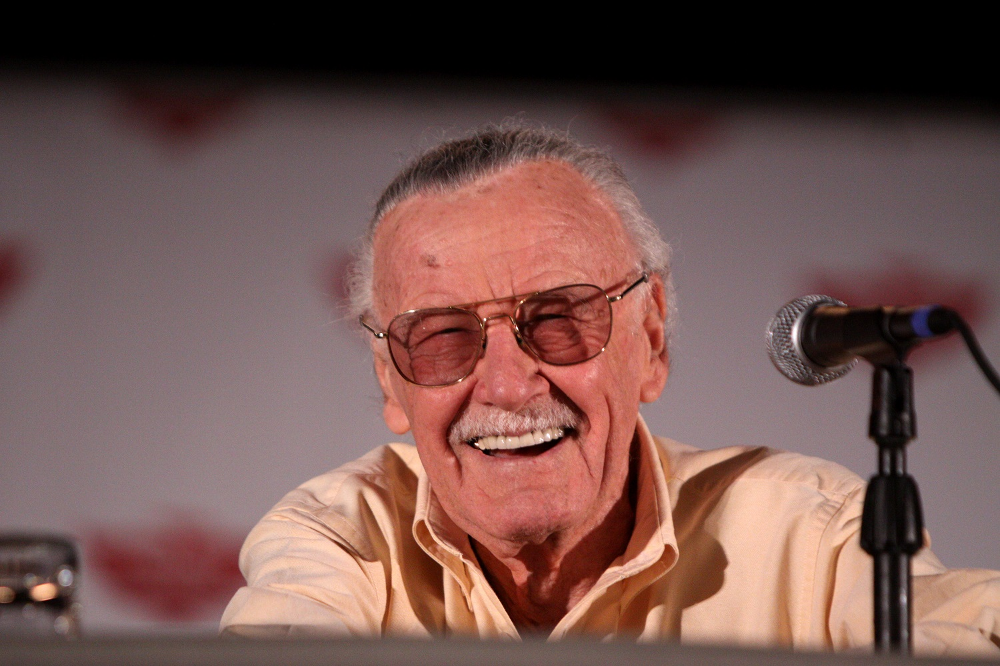

Stan Lee
The Immortal Legend

Stan Lee at the Phoenix Comicon in Phoenix, Arizona. (Author:
Gage Skidmore
from Peoria, AZ, United States of America)
Stan Lee (born Stanley Martin Lieber /ˈliːbər/; December 28, 1922 – November 12, 2018): *
- was an American comic book writer, editor, publisher, producer and Marvel Comics' primary creative leader for two decades, leading its expansion from a small division of a publishing house to a multimedia corporation that dominated the comics industry
- in collaboration with others at Marvel (particularly co-writer/artists Jack Kirby and Steve Ditko) he co-created numerous popular fictional characters, including superheroes Spider-Man, the X-Men, Iron Man, Thor, the Hulk, the Fantastic Four, Black Panther, Daredevil, Doctor Strange, Scarlet Witch and Ant-Man
- he pioneered a more naturalistic approach to writing superhero comics in the 1960s, and in the 1970s he challenged the restrictions of the Comics Code Authority, indirectly leading to changes in its policies
- in the 1980s he pursued development of Marvel properties in other media, with mixed results
- following his retirement from Marvel in the 1990s, he remained a public figurehead for the company, and frequently made cameo appearances in films and television shows based on Marvel characters, on which he received an executive producer credit
- he continued independent creative ventures into his 90s, until his death in 2018
- he was inducted into the comic book industry's Will Eisner Award Hall of Fame in 1994 and the Jack Kirby Hall of Fame in 1995
- he received the NEA's National Medal of Arts in 2008
I think people are interested in anything that’s a little bigger than life and that’s colorful and – you know, what they like? They like fairy tales for grownups. – Stan Lee